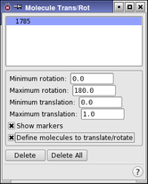

| Using | Features | Links |
This panel facilitates the specification of molecules to be rotated and translated during a Monte Carlo (MCMM or SPMC) conformational search.
To open this panel, choose Molecule Trans/Rot from the Search variables option menu in the CSearch tab of the Conformational Search panel and click Edit.
During a Monte Carlo conformational search, random changes are performed on the structure of the molecule. Structure energies are then evaluated to find the lowest-energy structure possible. To set up a Monte Carlo-based search using either the MCMM or SPMC method, it is necessary to specify which molecules will be translated and rotated. These molecules are selected using the Molecule Trans/Rot panel.
The simplest way to define molecules for translation and rotation is to click the Perform Automatic Setup button in the Conformational Search panel. Molecules that need to be translated and rotated are located and a list of molecule translation and rotation definitions is generated. This list (the Defined Translation/Rotation List) is displayed at the top of the panel.
Maestro labels the selected molecules with peach-colored vertical arrows encircled by “rotation” arrows if Show markers is selected. The currently selected molecule is distinguished by a turquoise label.

This list shows an atom in each molecul that is selected for translation or rotation. You can select a line in the list to display or delete.
If you clicked Perform Automatic Setup in the Conformational Search panel, this list contains the results of the setup when you open the panel.
The minimum acceptable rotation of a molecule must be specified. Each time a molecule must be rotated, an increment for rotation that is larger than this value will be selected. The default minimum rotation is 0.0.
This text box allows a value to be specified for the maximum acceptable molecule rotation increment. Each time a molecule must be rotated, an increment for rotation that is smaller than this value is selected. The default maximum rotation is 180.
The value in this text box sets the lower limit for molecule translation. Each time a molecule must be translated, a random increment larger than this value will be used. The default value is 0.0.
The value in this text box sets the upper limit for molecule translation. Each time a molecule must be translated, a random increment smaller than this value will be used. The default value is 1.0.
When you pick atoms for translation or rotation, Maestro labels them with peach-colored vertical arrows encircled by rotation arrows, with a "star" marker on the atoms. To distinguish the currently selected atom, Maestro colors the label turquoise.
Select this option to define a molecule to translate or rotate by picking it in the Workspace. Once the molecule has been picked, a new entry is displayed in the list of molecules to translate/rotate. Although only the picked atom is marked, the entire molecule is selected. You should not pick more than one atom in any molecule, even though this operation is allowed.
To delete a defined translation/rotation, select it by clicking on it in the list, or re-pick the atoms that define it, then click Delete.
To delete all the defined torsion rotations, click this button.